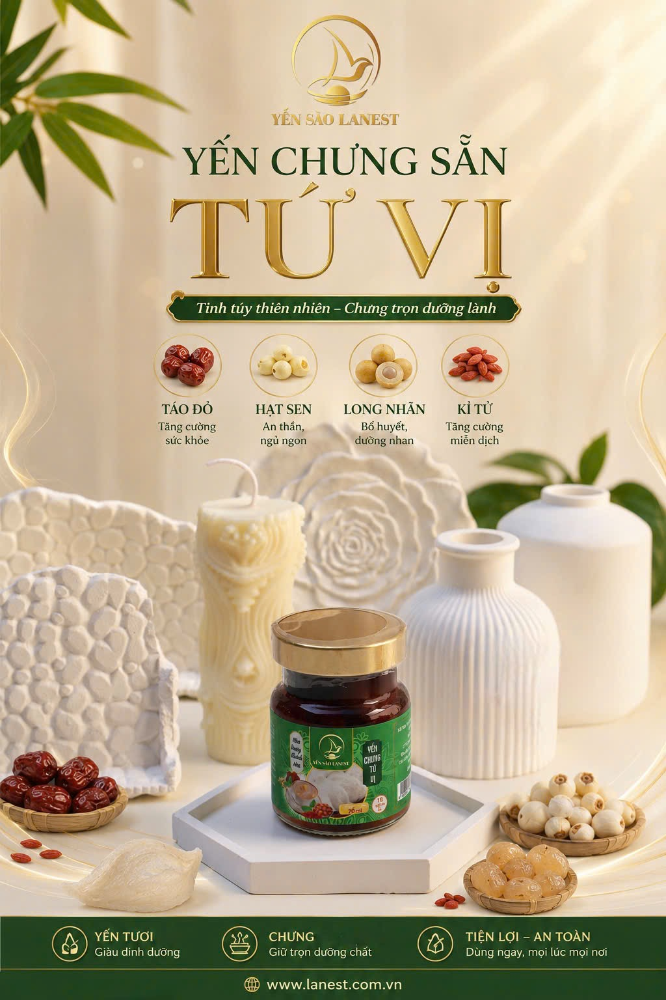

Yến Chưng Tứ Vị — Táo Đỏ, Long Nhãn, Hạt Sen, Kỷ Tử Hòa Quyện Trong Từng Hũ Yến Tươi
Yến Sào Lanest · Đăng ngày 20/09/2026

Yến chưng tứ vị là sự hòa quyện tinh tế giữa tổ yến thật nguyên chất và bốn vị thảo mộc quý — hạt sen, kỷ tử, long nhãn, táo đỏ — tạo nên món quà dưỡng sinh hoàn hảo dành cho sức khỏe và sắc đẹp. Mỗi hũ yến chưng tứ vị là sự kết hợp hài hòa giữa dưỡng chất từ thiên nhiên và tinh hoa ẩm thực truyền thống, mang đến vị ngọt thanh tao, hương thơm dịu nhẹ cùng nguồn năng lượng thuần khiết cho cơ thể.
Yến chưng tứ vị là gì?
Yến chưng tứ vị thuộc dòng yến hũ chưng sẵn 7g yến tươi của Yến Sào Lanest — sản phẩm chủ lực chiếm hơn một nửa doanh thu công ty. Mỗi hũ 70ml chứa 7g yến tươi thật, chưng cùng táo đỏ 2,7g, long nhãn 1,5g, hạt sen 0,55g và kỷ tử 0,17g, tiệt trùng sẵn, dùng ngay không cần chưng lại (nguồn: danh mục sản phẩm website Lanest).
Thành phần yến chưng tứ vị Lanest
- Nước, yến tươi 7g
- Táo đỏ 2,7g
- Long nhãn 1,5g
- Hạt sen 0,55g
- Kỷ tử 0,17g
- Đường phèn, collagen thủy phân, chất xơ inulin
- Chất điều chỉnh độ acid INS (327, 331(iii)), chất ổn định INS (401, 407, 415, 466), hương yến tổng hợp
- Không chất bảo quản, không phẩm màu, không đường hóa học
Công dụng của yến chưng tứ vị
Tổ yến — nguồn dưỡng chất quý giá. Giàu 18 loại axit amin và hơn 30 nguyên tố vi lượng, giúp phục hồi thể lực, tăng sức đề kháng. Yến hỗ trợ thư giãn tinh thần, an thần tự nhiên, giúp ngủ ngon hơn. Collagen tự nhiên trong tổ yến giúp da mịn màng, căng bóng, trẻ hóa. Yến còn hỗ trợ tiêu hóa, giúp hấp thu dưỡng chất tốt hơn — đặc biệt phù hợp người suy nhược, người cao tuổi.
Hạt sen — an thần, dưỡng tâm, cải thiện giấc ngủ. Thanh tâm, an thần, giúp ngủ sâu và giảm mệt mỏi; bổ tỳ vị, hồi phục cơ thể nhẹ nhàng; giàu vitamin và khoáng chất giúp làm đẹp da, chống oxy hóa.
Kỷ tử — tăng thị lực, bổ gan thận, dưỡng nhan. Bổ gan thận, sáng mắt, hỗ trợ lưu thông khí huyết; tăng sức đề kháng, giảm căng thẳng mệt mỏi; hỗ trợ cân bằng nội tiết giúp da hồng hào tươi tắn.
Long nhãn — dưỡng huyết, an thần, cải thiện trí nhớ. Tăng cường trí nhớ, giúp tinh thần thư thái, giảm stress; bổ máu, dưỡng tâm, cải thiện tuần hoàn; giúp hồi phục thể lực nhanh chóng.
Táo đỏ — bổ huyết, tăng đề kháng, thanh nhiệt. Bổ máu, dưỡng khí, hỗ trợ tạo hồng cầu; tăng cường hệ miễn dịch; thanh nhiệt, làm dịu cơ thể, giảm nóng trong.
(Công dụng của từng thảo mộc nêu trên là kiến thức dinh dưỡng Đông y phổ biến, không phải nghiên cứu riêng của Lanest — dùng ở mức khái quát, không gắn số liệu lâm sàng cụ thể.)
Kết hợp lại, yến chưng tứ vị mang đến bốn lợi ích chính: bổ dưỡng toàn diện; an thần, ngủ ngon, giảm căng thẳng; dưỡng nhan, tăng đề kháng; và phù hợp mọi đối tượng — người lớn tuổi, phụ nữ, người làm việc căng thẳng hoặc cần phục hồi sức khỏe.
Vì sao nên chọn yến chưng tứ vị Lanest?
Yến chưng tứ vị Lanest sản xuất khép kín, tiệt trùng, 100% yến thật, không chất bảo quản, không đường hóa học, không phẩm màu, nguồn gốc Việt Nam. Sản phẩm đóng hũ thủy tinh tiện lợi, mở nắp dùng ngay, phù hợp mang theo khi đi làm, đi học hoặc làm quà biếu sức khỏe.
Yến chưng tứ vị dùng cho ai, dùng khi nào?
Phù hợp người lớn tuổi cần bồi bổ, phụ nữ muốn dưỡng nhan, người làm việc căng thẳng cần an thần dễ ngủ, hoặc người mới ốm dậy cần phục hồi thể lực. Nên dùng lạnh để cảm nhận trọn vị thanh mát của táo đỏ, long nhãn, hạt sen, kỷ tử.
Cách bảo quản và sử dụng
Bảo quản nơi khô ráo thoáng mát trước khi mở nắp; sau khi mở nên dùng ngay và bảo quản ngăn mát nếu chưa dùng hết trong ngày. Có thể dùng lạnh trực tiếp hoặc hâm ấm nhẹ tùy khẩu vị.
Yến chưng tứ vị giá bao nhiêu?
Yến chưng tứ vị đồng giá với 13 vị khác trong dòng yến hũ 7g yến tươi:
| Hình thức mua | Số lượng | Đơn giá/hũ | Thành tiền |
|---|---|---|---|
| Giá lẻ | 01 hũ | 40.000đ | 40.000đ |
| Combo tiện lợi | 10 hũ tặng 1 hũ | 40.000đ | 400.000đ |
| Combo tiện lợi | 20 hũ tặng 2 hũ | 40.000đ | 800.000đ |
| Combo tiết kiệm | 30 hũ tặng 5 hũ | 40.000đ | 1.200.000đ |
| Combo tiết kiệm | 50 hũ tặng 10 hũ | 40.000đ | 2.000.000đ |
(Giá đã gồm VAT 8%. Khách mua số lượng lớn hoặc muốn làm đại lý vui lòng liên hệ hotline 025.8627.8627 để được báo giá và nhận chính sách riêng.)
Câu hỏi thường gặp về yến chưng tứ vị
Yến chưng tứ vị có dùng được mỗi ngày không? Có thể dùng đều đặn, mỗi lần 1 hũ 7g yến tươi, phù hợp dùng vào buổi sáng sớm hoặc tối trước khi ngủ.
Yến chưng tứ vị khác gì so với yến chưng táo đỏ hay yến chưng long nhãn? Yến chưng tứ vị kết hợp cả bốn vị táo đỏ, long nhãn, hạt sen, kỷ tử trong cùng một hũ, trong khi các vị kia chỉ dùng một loại thảo mộc chính — phù hợp nếu muốn trải nghiệm đủ vị trong một lần dùng.
Mua yến chưng tứ vị ở đâu uy tín?
Ưu tiên chọn tổ yến có nguồn gốc rõ ràng, có giấy kiểm định, không tẩy trắng, không hóa chất. Xem thêm 14 vị khác của dòng yến hũ chưng sẵn 7g yến tươi, thử thêm Yến Chưng Gừng, hoặc trải nghiệm dòng đậm đặc hơn với Yến Chưng Nguyên Chất 100%. Xem toàn bộ sản phẩm Yến Sào Lanest.